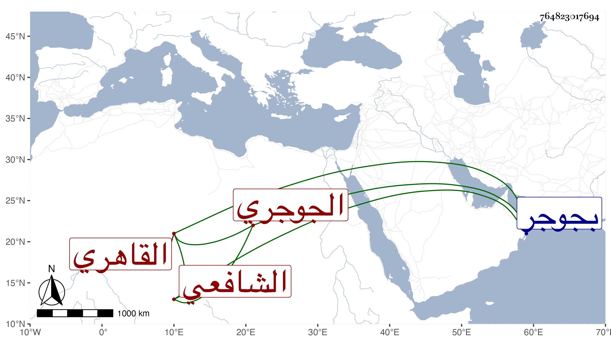

0902Sakhawi.DawLamic.ITO20230111-ara1.EIS1600.764823017694
Biography ID: 764823017694
423
محمد بن محمد بن علي الشمس بن الشرف الجوجري ثم القاهري الشافعي والد التاج عبد الوهاب الماضي ويعرف بابن شرف . ولد بجوجر ثم تحول منها وحفظ التنبيه والمنهاج الأصلي وألفية النحو وغيرها ورافق الجلال المحلي في الأخذ عن البرماوي والبيجوري وغيرهما كابن أنس في الفرائض ، كل ذلك مع تكسبه بالتجارة على طريقة كاد انفراده بورعه فيها . واستقر في مشيخة البشتكية بعد وفاة صاحبه وبلديه الشهاب أحمد بن حسن بن علي وتميز في الفضل وجود الخط وكان يذكر أن شيخه في الكتابة مثال خط سيدي عبد العزيز الديريني . وكان المحلي يعظمه بحيث رأيت وصفه له في إجازة ولده بقوله صديقنا الشيخ العالم الصالح . مات سنة ست وخمسين رحمه الله وإيانا .
